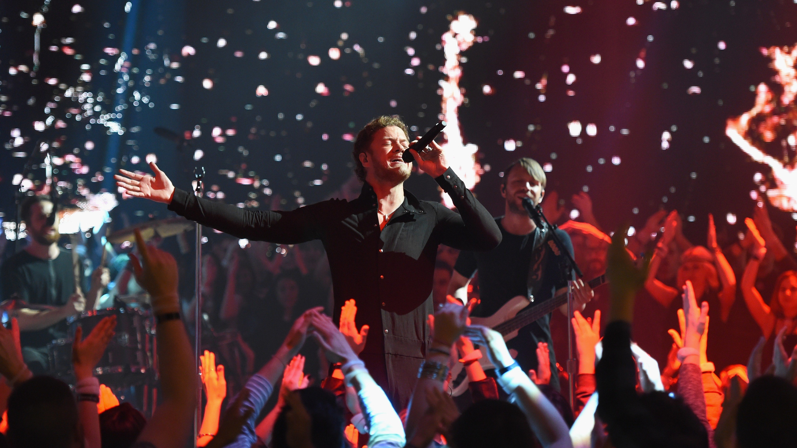
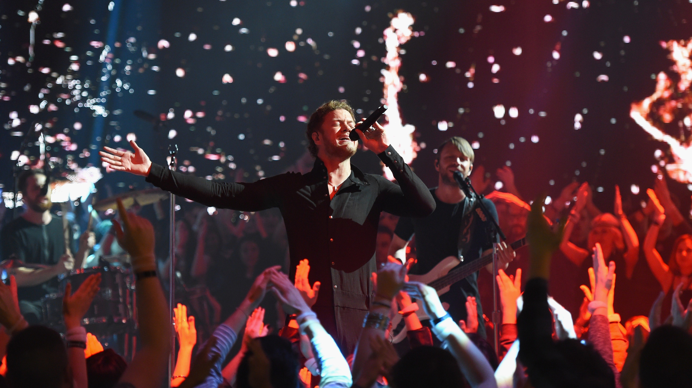

Imagine Dragons is an American pop rock band from Las Vegas, Nevada, consisting of lead singer Dan Reynolds, lead guitarist Wayne Sermon, bassist Ben McKee, and drummer Daniel Platzman. The band first gained exposure with the release of their single "It's Time", followed by their award-winning debut studio album Night Visions (2012), which resulted in the chart-topping singles "Radioactive" and "Demons". Rolling Stone named "Radioactive", which holds the record for most weeks charted on the Billboard Hot 100, the "biggest rock hit of the year".MTV called them "the year's biggest breakout band" and Billboard named them their "Breakthrough Band of 2013" and "Biggest Band of 2017" and placed them at the top of their "Year In Rock" rankings for 2013, 2017, and 2018. Imagine Dragons topped the Billboard Year-End "Top Artists – Duo/Group" category in 2018. The band's second studio album Smoke + Mirrors (2015) reached number one in the US, Canada and the UK. The album was preceded by the top 40 single "I Bet My Life", and second and third singles, "Gold" and "Shots". The band then embarked on a ten month long world tour, which led to a brief hiatus in 2016, with occasional performances and soundtrack contributions throughout the remainder of the year. The band released their third studio album, Evolve (2017) which resulted in three chart-topping singles, "Believer", "Thunder", and "Whatever It Takes", also making them the artist with the most weeks at number-one on the Billboard Hot Rock Songs chart. The album reached the top five in many countries. After the Evolve World Tour was completed, Imagine Dragons released their fourth studio album Origins, on November 9, 2018. "Natural" and "Zero" were released as the first singles off the album. Afterwards, "Machine" and "Bad Liar" were also released. A previously released single titled "Born to Be Yours" was included on a deluxe version of the album. While all four albums were commercially successful, critical reception was mixed. Imagine Dragons has won three American Music Awards, nine Billboard Music Awards, one Grammy Award, one MTV Video Music Award and one World Music Award. In May 2014, the band was nominated for fourteen Billboard Music Awards, including Top Artist of the Year and a Milestone Award, which recognizes innovation and creativity of artists across different genres. In April 2018, the band was nominated eleven more times for Billboard Music Awards. Imagine Dragons have sold 35 million RIAA certified singles in the US and 20 million albums worldwide. They were the most streamed group of 2018 on Spotify and are the first rock act to have two songs, "Believer" and "Thunder" to surpass one billion streams each. Imagine Dragons have the top three rock songs of the 2010s on the Billboard charts, "Believer", "Thunder", and "Radioactive"
 
